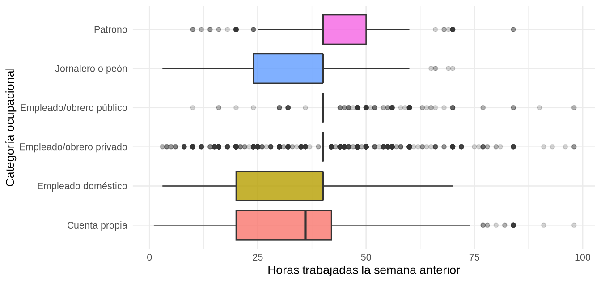
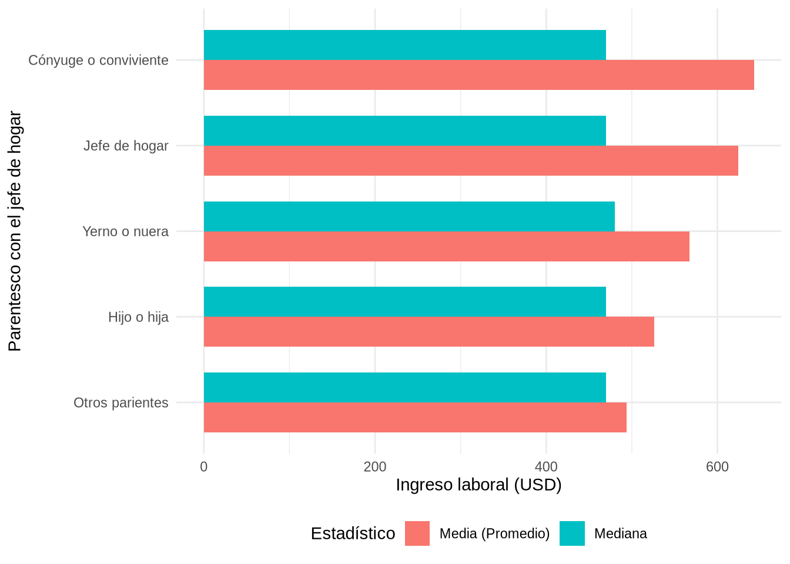

Proyecto del Primer Bimestre
Grupo 1
1 Introducción
En la actualidad, entender la situación laboral y económica de un país no puede depender únicamente de percepciones generales; hace falta respaldarse en datos reales. Como parte del curso de Probabilidad y Estadística de la Escuela Politécnica Nacional (Ing. Sistemas de la Información, 2026-B), este proyecto busca poner en práctica los conceptos y herramientas vistos en clase para explorar y analizar información estadística vinculada directamente con la realidad nacional del Ecuador.
Para este trabajo se utiliza la base de datos de la Encuesta Nacional de Empleo, Desempleo y Subempleo (ENEMDU), elaborada por el Instituto Nacional de Estadística y Censos (INEC), trabajando específicamente con la última entrega disponible correspondiente a diciembre de 2025. Esta encuesta recopila información detallada sobre las condiciones laborales, ingresos, horas de trabajo y características socioeconómicas de la población, lo que la convierte en una fuente ideal para aplicar técnicas de estadística descriptiva.
A lo largo del reporte se realiza el procesamiento y análisis de esta información mediante el lenguaje de programación R, empleando medidas de tendencia central, medidas de dispersión de forma agrupada y representaciones gráficas. El objetivo principal es responder a tres preguntas estadísticas formuladas por el grupo —enfocadas en la relación entre el ingreso laboral, las horas trabajadas, la afiliación a la seguridad social, la categoría ocupacional y el parentesco en el hogar—, además de una pregunta adicional propuesta por el docente. De esta manera, se busca no solo calcular indicadores numéricos, sino interpretarlos con criterio para comprender mejor las dinámicas del mercado laboral ecuatoriano.
2 Información y preparación
2.1 Descripción de la información
Origen y propósito: Los datos provienen de la Encuesta Nacional de Empleo, Desempleo y Subempleo (ENEMDU), levantada y publicada por el Instituto Nacional de Estadística y Censos (INEC) del Ecuador. El propósito principal de esta encuesta es recopilar información oficial sobre la actividad económica, las condiciones laborales, los ingresos y las características demográficas de la población ecuatoriana, sirviendo como base para el análisis económico y la toma de decisiones públicas.
Periodicidad: La ENEMDU se ejecuta de manera continua con publicaciones mensuales (además de reportes acumulados trimestrales y anuales). Siguiendo los lineamientos del proyecto, no se analiza la serie histórica completa, sino únicamente el último corte disponible correspondiente a diciembre de 2025.
Dimensión de la base de datos: Aunque la encuesta incluye módulos de vivienda y consumidor, el análisis se centra en la base de personas (enemdu_persona_2025_12.csv), la cual cuenta con una dimensión de 27,808 registros (filas), donde cada registro corresponde a una persona encuestada, y 144 variables (columnas) que abarcan datos demográficos, educativos y laborales.
Variables de estudio: Dado que se trata de una base de datos compuesta, se seleccionaron las variables clave necesarias para responder a las preguntas del grupo, clasificándolas según su naturaleza estadística:
| Código | Descripción | Tipo de variable |
|---|---|---|
p05a |
Tipo de seguro social al que está afiliado | Cualitativa nominal |
p42 |
Categoría de ocupación (público, privado, cuenta propia, etc.) | Cualitativa nominal |
p04 |
Relación de parentesco con el jefe de hogar | Cualitativa nominal |
ingrl |
Ingreso laboral mensual (en dólares) | Cuantitativa continua |
p24 |
Horas trabajadas durante la semana anterior | Cuantitativa discreta |
2.2 Carga y preparación de la información
Para garantizar la validez de las medidas de tendencia central y dispersión, se filtran los registros correspondientes a personas con ingresos laborales reportados válidos (ingrl > 0 & ingrl < 999999), eliminando así a la población sin ingresos laborales y los códigos especiales de «no informa» (999999) establecidos por el INEC. Asimismo, se asignan etiquetas descriptivas a los códigos numéricos de acuerdo con el diccionario de datos oficial.
Code
# Filtrado de registros válidos de ingreso laboral
enemdu_clean <- enemdu[ !is.na(ingrl) & ingrl > 0 & ingrl < 999999 ]
# Etiquetado de Seguro Social (p05a)
enemdu_clean[ , seguro_lbl := fcase(
p05a == 1, "IESS Seguro General",
p05a == 2, "IESS Seguro Voluntario",
p05a == 3, "IESS Seguro Campesino",
p05a == 4, "ISSFA / ISSPOL",
p05a == 5, "Seguro privado con hosp.",
p05a == 6, "Seguro privado sin hosp.",
p05a == 7, "AUS",
p05a == 8, "Seguros municipales/Consejos",
p05a == 9, "Seguro de vida",
p05a == 10, "Ninguno (Sin seguro)",
default = "No informa"
) ]
# Etiquetado de Categoría de Ocupación (p42)
enemdu_clean[ , ocupacion_lbl := fcase(
p42 == 1, "Empleado/obrero público",
p42 == 2, "Empleado/obrero privado",
p42 == 3, "Empleado/obrero tercerizado",
p42 == 4, "Jornalero o peón",
p42 == 5, "Patrono",
p42 == 6, "Cuenta propia",
p42 == 7, "Trabajador hogar no remun.",
p42 == 8, "Trabajador no remun. otro hogar",
p42 == 9, "Ayudante no remun. asalariado",
p42 == 10, "Empleado doméstico",
default = "Otro / No informa"
) ]
# Etiquetado de Parentesco (p04)
enemdu_clean[ , parentesco_lbl := fcase(
p04 == 1, "Jefe de hogar",
p04 == 2, "Cónyuge o conviviente",
p04 == 3, "Hijo o hija",
p04 == 4, "Yerno o nuera",
p04 == 5, "Nieto o nieta",
p04 == 6, "Padres o suegros",
p04 == 7, "Otros parientes",
p04 == 8, "Empleado doméstico",
p04 == 9, "Otros no parientes",
default = "Otro"
) ]Tras la limpieza, la muestra efectiva de análisis cuenta con 11,934 trabajadores con ingresos laborales válidos. ### Propuesta de preguntas y relevancia
Con el fin de explorar la situación laboral del país desde enfoques distintos a los análisis más habituales, el grupo formuló tres preguntas estadísticas enfocadas en variables socioeconómicas y laborales clave de la encuesta, a las que se suma una cuarta pregunta seleccionada de las propuestas por el docente:
- ¿Cómo varían la tendencia central y la dispersión del ingreso laboral y de las horas trabajadas a la semana según el tipo de seguro social al que está afiliado el trabajador?
- Relevancia: En el Ecuador, la afiliación a la seguridad social es uno de los principales indicadores de formalidad laboral. Analizar los ingresos (
ingrl) y la carga horaria (p24) según el tipo de seguro (p05a) permite comprobar si quienes carecen de afiliación o pertenecen a regímenes específicos no solo perciben menores ingresos, sino también si enfrentan jornadas menos estables o una mayor variabilidad en sus ganancias.
- Relevancia: En el Ecuador, la afiliación a la seguridad social es uno de los principales indicadores de formalidad laboral. Analizar los ingresos (
- ¿Qué diferencias existen en la distribución y dispersión de las horas trabajadas a la semana y del ingreso laboral según la categoría de ocupación?
- Relevancia: Comparar grupos como empleados públicos, empleados privados, trabajadores por cuenta propia y patronos (
p42) ayuda a entender cómo cambia la estabilidad laboral según el tipo de vínculo de trabajo. Más allá de ver quién gana más en promedio, evaluar la dispersión de las horas trabajadas (p24) y de los ingresos (ingrl) permite identificar en qué sectores las jornadas son más regulares y en cuáles existe mayor incertidumbre económica.
- Relevancia: Comparar grupos como empleados públicos, empleados privados, trabajadores por cuenta propia y patronos (
- ¿Cómo se comportan el ingreso laboral promedio, la mediana y la dispersión según la relación de parentesco con el jefe de hogar?
- Relevancia: Esta pregunta aporta una mirada desde la estructura familiar (
p04) para analizar cómo se distribuyen los ingresos laborales (ingrl) dentro de los hogares ecuatorianos. Además, resulta útil desde el punto de vista estadístico para comparar el comportamiento de la media frente a la mediana y observar si el sostén económico recae principalmente en el jefe de hogar o si existen diferencias marcadas con los ingresos de cónyuges, hijos u otros parientes.
- Relevancia: Esta pregunta aporta una mirada desde la estructura familiar (
- [Colocar aquí la pregunta propuesta por el docente]
- Relevancia: [Colocar aquí la relevancia de la pregunta del docente].
3 Análisis estadístico
Para evaluar cada grupo analizado se calculan la media muestral (\(\overline{x}\)), la mediana (\(Me\)) y la desviación estándar muestral (\(s\)):
\[\overline{x} = \frac{1}{n} \sum\limits_{i=1}^n x_i \qquad \qquad s = \sqrt{\frac{1}{n-1} \sum\limits_{i=1}^n (x_i - \overline{x})^2}\]
3.2 Pregunta 2: Categoría ocupacional vs. Estabilidad de la jornada e ingresos
Code
tab_p2 <- enemdu_clean[ !is.na(p42), list(
fn = .N,
EH = mean( p24, na.rm = TRUE ),
SDH = sd( p24, na.rm = TRUE ),
Hmed = median( p24, na.rm = TRUE ),
EI = mean( ingrl, na.rm = TRUE ),
SDI = sd( ingrl, na.rm = TRUE ),
Imed = median( ingrl, na.rm = TRUE ) ),
by = list( p42, ocupacion_lbl ) ]
setorder( tab_p2, -fn )Code
tab_p2[ , list( ocupacion_lbl, fn, EH, SDH, Hmed, EI, SDI, Imed ) ] %>%
kable(
label = NA,
caption = 'Resumen estadístico de horas semanales e ingreso laboral (USD) según categoría ocupacional',
row.names = FALSE,
col.names = c(
'Categoría ocupacional',
'\\( n \\)',
'\\( E[H] \\)',
'\\( SD[H] \\)',
'\\( H_{med} \\)',
'\\( E[I] \\)',
'\\( SD[I] \\)',
'\\( I_{med} \\)' ),
align = 'lrrrrrrr',
digits = c( 0, 0, 2, 2, 2, 2, 2, 2 ),
format.args = list( big.mark = ',', decimal.mark = '.', scientific = FALSE ),
escape = FALSE,
centering = TRUE
) %>%
kable_classic(
full_width = FALSE,
fixed_thead = TRUE,
html_font = "Computer Modern",
position = 'center',
latex_options = c('hold_position', 'repeat_header', 'scale_down')
)| Categoría ocupacional | \( n \) | \( E[H] \) | \( SD[H] \) | \( H_{med} \) | \( E[I] \) | \( SD[I] \) | \( I_{med} \) |
|---|---|---|---|---|---|---|---|
| Cuenta propia | 4,614 | 33.65 | 14.90 | 36 | 381.03 | 482.91 | 290 |
| Empleado/obrero privado | 4,030 | 40.09 | 10.98 | 40 | 616.74 | 462.59 | 520 |
| Jornalero o peón | 1,279 | 33.00 | 11.73 | 40 | 332.14 | 161.46 | 300 |
| Empleado/obrero público | 1,255 | 41.40 | 6.11 | 40 | 1,484.59 | 931.20 | 1,214 |
| Patrono | 365 | 43.10 | 12.58 | 40 | 1,197.11 | 1,340.58 | 830 |
| Empleado doméstico | 359 | 32.53 | 11.89 | 40 | 355.99 | 178.77 | 320 |
| Trabajador hogar no remun. | 32 | 42.81 | 12.79 | 38 | 165.88 | 192.22 | 98 |
Code
top_ocup <- tab_p2[ 1:6 ]$ocupacion_lbl
ggplot( enemdu_clean[ ocupacion_lbl %in% top_ocup ],
aes( x = reorder( ocupacion_lbl, p24, FUN = median ), y = p24, fill = ocupacion_lbl ) ) +
geom_boxplot( alpha = 0.8, outlier.alpha = 0.2, show.legend = FALSE ) +
coord_flip() +
labs( x = "Categoría ocupacional", y = "Horas trabajadas la semana anterior" ) +
theme_minimal( base_size = 11 )
3.3 Pregunta 3: Rol en el hogar (parentesco) vs. Ingreso laboral
Code
tab_p3[ , list( parentesco_lbl, fn, EI, SDI, Imed ) ] %>%
kable(
label = NA,
caption = 'Resumen estadístico del ingreso laboral mensual (USD) según parentesco con el jefe de hogar',
row.names = FALSE,
col.names = c(
'Parentesco con jefe de hogar',
'\\( n \\)',
'\\( E[I] \\)',
'\\( SD[I] \\)',
'\\( I_{med} \\)' ),
align = 'lrrrr',
digits = c( 0, 0, 2, 2, 2 ),
format.args = list( big.mark = ',', decimal.mark = '.', scientific = FALSE ),
escape = FALSE,
centering = TRUE
) %>%
kable_classic(
full_width = FALSE,
fixed_thead = TRUE,
html_font = "Computer Modern",
position = 'center',
latex_options = c('hold_position', 'repeat_header', 'scale_down')
)| Parentesco con jefe de hogar | \( n \) | \( E[I] \) | \( SD[I] \) | \( I_{med} \) |
|---|---|---|---|---|
| Jefe de hogar | 6,265 | 624.62 | 723.13 | 470 |
| Hijo o hija | 2,742 | 526.46 | 450.04 | 470 |
| Cónyuge o conviviente | 1,982 | 642.62 | 765.57 | 470 |
| Otros parientes | 377 | 494.21 | 409.88 | 470 |
| Yerno o nuera | 223 | 567.43 | 396.04 | 480 |
| Nieto o nieta | 165 | 401.92 | 252.40 | 400 |
| Otros no parientes | 109 | 561.07 | 508.85 | 450 |
| Padres o suegros | 57 | 409.98 | 522.16 | 300 |
| Empleado doméstico | 14 | 526.00 | 132.29 | 470 |
Code
top_par <- tab_p3[ 1:5 ]
tab_p3_long <- melt( top_par, id.vars = "parentesco_lbl", measure.vars = c( "EI", "Imed" ),
variable.name = "Medida", value.name = "Valor" )
tab_p3_long[ , Medida := fifelse( Medida == "EI", "Media (Promedio)", "Mediana" ) ]
ggplot( tab_p3_long, aes( x = reorder( parentesco_lbl, Valor ), y = Valor, fill = Medida ) ) +
geom_col( position = "dodge", width = 0.7 ) +
coord_flip() +
labs( x = "Parentesco con el jefe de hogar", y = "Ingreso laboral (USD)", fill = "Estadístico" ) +
theme_minimal( base_size = 11 ) +
theme( legend.position = "bottom" )
4 Resultados
4.1 Interpretación de los hallazgos
Brecha salarial según afiliación a la seguridad social: Se evidencia una marcada diferencia entre el sector formal y el informal. Los trabajadores sin seguro social (
p05a = 10) perciben un ingreso promedio de $373.71 (mediana $320.00), valor inferior al salario básico unificado, mientras que los afiliados al IESS Seguro General (p05a = 1) alcanzan una media de $979.96 (mediana $710.00), más del doble que el grupo sin afiliación. Asimismo, la alta desviación estándar en el IESS General refleja la presencia de remuneraciones altas que elevan la media por encima de la mediana.Estabilidad horaria e ingresos por categoría ocupacional: Al evaluar la dispersión de la jornada semanal, los empleados públicos (
p42 = 1) muestran la mayor regularidad contractual, concentrando su trabajo alrededor de las 40 horas semanales con una desviación estándar de apenas 6.11 horas. Por el contrario, los trabajadores por cuenta propia (p42 = 6) registran la mayor inestabilidad horaria con una desviación estándar de 14.90 horas, acompañada de un ingreso promedio considerablemente menor ($381.03).Distribución del ingreso según el rol en el hogar: El análisis por parentesco permite contrastar la robustez de la mediana frente a la media ante valores extremos. Tanto jefes de hogar (
p04 = 1), cónyuges (p04 = 2) e hijos (p04 = 3) comparten exactamente la misma mediana de $470.00 (correspondiente al salario básico). Sin embargo, sus medias y dispersiones cambian notablemente: los cónyuges promedian $642.62 con una desviación estándar de $765.57, frente a una media de **\(526.46** (\)SD = $450.04$) en los hijos, reflejando una mayor dispersión salarial en los dos primeros roles familiares.Resultados de la pregunta propuesta por el docente: [Redactar aquí la interpretación de la cuarta pregunta una vez procesada].
4.2 Referencias bibliográficas
- Instituto Nacional de Estadística y Censos (INEC). (2025). Encuesta Nacional de Empleo, Desempleo y Subempleo (ENEMDU) - Diciembre 2025. Base de datos de personas y diccionario de variables. Quito, Ecuador: INEC. https://www.ecuadorencifras.gob.ec/
- Escuela Politécnica Nacional (EPN). (2026). Guía del Proyecto Integrador y material de clase de Probabilidad y Estadística (Periodo 2026-B). Quito, Ecuador.